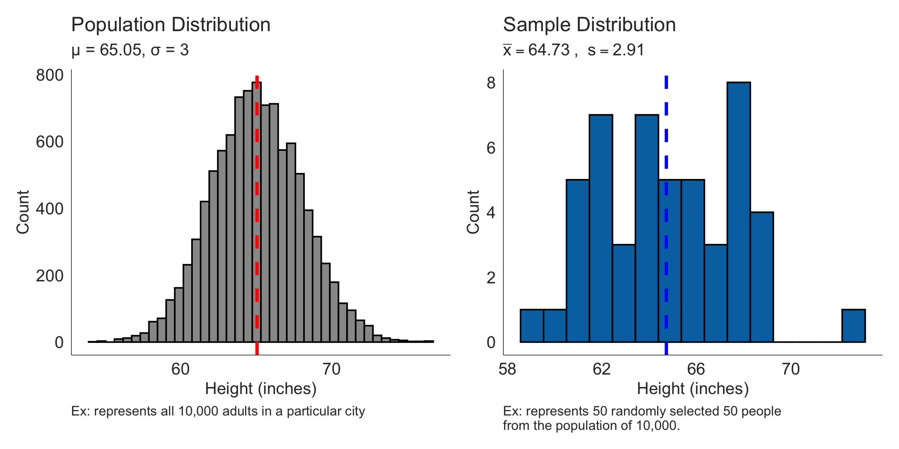
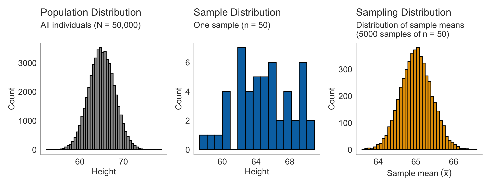
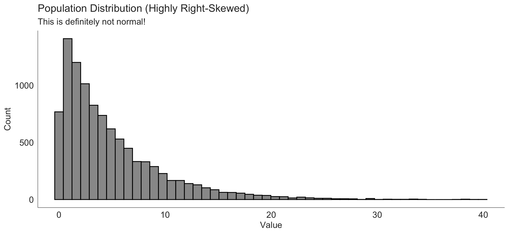
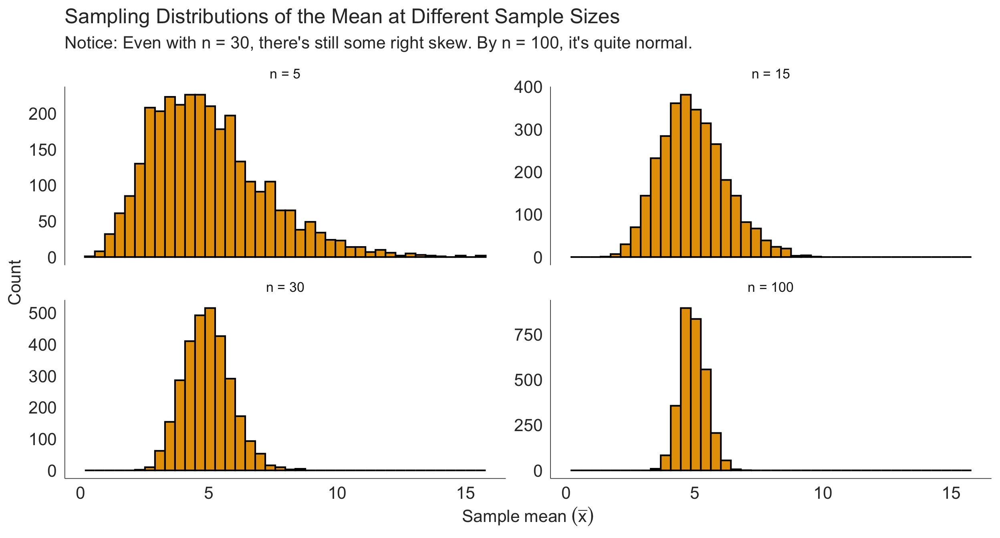
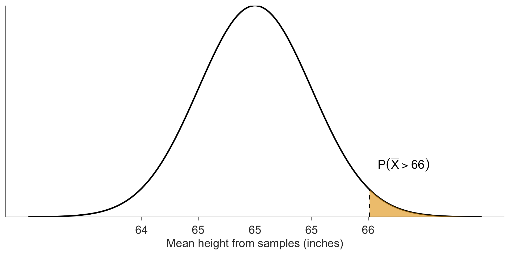
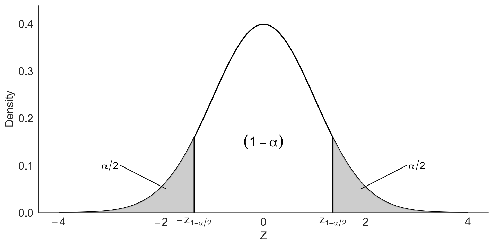
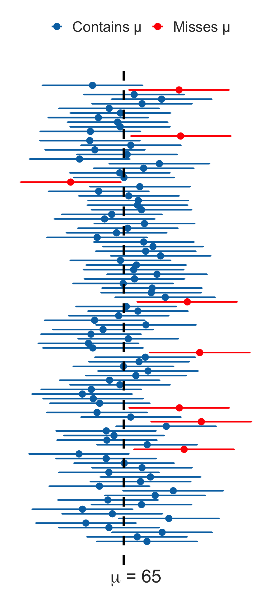

# Create a population
population <- tibble(
height = rnorm(10000, mean = 65, sd = 3)
)
# Take 5 samples of size 50
results <- tibble(
sample_num = 1:5,
mean_height = NA_real_ # Initialize with missing values
)
# Calculate mean for each sample
for (i in 1:5) {
one_sample <- sample(population$height, size = 50) # Take a random sample
results$mean_height[i] <- mean(one_sample) # Calculate the mean
}Sampling Distributions and Confidence Intervals
Textbook Sections 4.1–4.2
Emile Latour, Nicky Wakim, Meike Niederhausen
February 2, 2026

Learning Objectives
By the end of today’s lecture, you will be able to:
- Distinguish between population parameters and sample statistics
- Explain the concept of sampling variability and the sampling distribution
- Apply the Central Limit Theorem to describe the distribution of sample means
- Calculate and interpret confidence intervals for a population mean
- Understand when to use the t-distribution vs. the normal distribution
Roadmap for Today
Part 1: Sampling Fundamentals
- Population parameters vs. sample statistics
- Point estimates
- Sampling variability
Part 2: Sampling Distributions
- What is a sampling distribution?
- Properties of the sampling distribution of means
- Standard error
Part 3: Central Limit Theorem
- Statement of the CLT
- When the CLT applies
- Applications with R
Part 4: Introduction to Inference
- From point estimates to interval estimates
- Confidence intervals: concept and interpretation
Part 5: Confidence Intervals in Practice
- CI when σ is known (z-based)
- CI when σ is unknown (t-based)
- The t-distribution
Part 6: Wrap-up
- Summary
- Common misconceptions
- Next steps
Sampling Fundamentals
Why do we sample?
The fundamental challenge of statistics
We want to learn about a population, but we can only observe a sample.
Populations:
- Too large to measure everyone
- Too expensive or time-consuming
- Sometimes impossible (would you destroy every lightbulb to test lifespan?)
Samples:
- Smaller, manageable
- If chosen properly, can tell us about the population
- But there’s uncertainty…
From Week 1: Population vs. sample
(Target) Population
- Group of interest being studied
- Group from which the sample is selected
- studies often have inclusion and/or exclusion criteria
- Almost always too expensive or logistically impossible to collect data for every case in a population
Sample
- Group on which data are collected
- A subset (of measurements) from the population
- We use information from a sample to learn about the population from which it was drawn.
- Goal is to get a representative sample of the population: the characteristics of the sample are similar to the characteristics of the population
Population vs. Sample: Visual
Population parameters vs. Sample statistics
Understanding the notation is crucial for clear statistical thinking.
Population Parameter
Fixed (but unknown) values describing the population
For the mean:
- Symbol: \(\mu\) (mu)
- We want to know it but usually can’t measure it
For standard deviation:
- Symbol: \(\sigma\) (sigma)
- Also fixed and unknown
For proportion:
- Symbol: \(p\) or \(\pi\) (pi)
Sample Statistic
Calculated values from our sample data
For the mean:
- Symbol: \(\bar{x}\) (x-bar)
- Our best guess at \(\mu\)
For standard deviation:
- Symbol: \(s\)
- Our estimate of \(\sigma\)
For proportion:
- Symbol: \(\hat{p}\) (p-hat)
What is a point estimate?
A point estimate is a single value calculated from sample data used to estimate a population parameter.
Examples:
- Sample mean (\(\bar{x}\)) estimates population mean (\(\mu\))
- Sample proportion (\(\hat{p}\)) estimates population proportion (\(p\))
- Sample standard deviation (\(s\)) estimates population SD (\(\sigma\))
The problem with point estimates
They’re just single numbers. They don’t tell us:
- How much uncertainty there is
- How close we might be to the true value
- Whether our sample was typical or unusual
Sampling variability: A demonstration in R (1/2)
Let’s see what happens when we take multiple samples from the same population.
Sampling variability: A demonstration in R (2/2)
The results from taking
- 5 random samples,
- each size 50,
- from our population of 10,000
# A tibble: 5 × 2
sample_num mean_height
<int> <dbl>
1 1 64.8
2 2 64.4
3 3 64.8
4 4 65.5
5 5 64.7
Notice: Even from the same population, our sample means vary! This is sampling variability - it’s not error, it’s natural variation.
Visualizing sampling variability (1/3)
What if we took many, many samples?
- From the same population size 10,000 with \(\mu = 65\) and \(\sigma = 3\)
# Take 1000 samples, each of size 50
many_samples <- tibble(
sample_num = 1:1000,
mean_height = NA_real_ # Initialize with missing values
)
# Calculate mean for each sample
for (i in 1:1000) {
one_sample <- sample(population$height, size = 50) # Take a random sample
many_samples$mean_height[i] <- mean(one_sample) # Calculate the mean
}Visualizing sampling variability (2/3)
What if we took many, many samples?
- From the same population size 10,000 with \(\mu = 65\) and \(\sigma = 3\)
Visualizing sampling variability (3/3)
What if we took many, many samples?

The Sampling Distribution
What is a sampling distribution?
Definition
The sampling distribution of a statistic is the distribution of that statistic’s values across all possible samples of a given size from a population.
Think of it this way:
- Imagine taking a sample of size \(n\)
- Calculate a statistic (like the mean)
- Write it down
- Repeat steps 1-3 for all possible samples
- The distribution of those statistics is the sampling distribution
Key insight: The sampling distribution tells us how our estimates behave across different samples.
Three distributions to keep straight
Population Distribution
- Distribution of the variable in the population
- Mean: \(\mu\), SD: \(\sigma\)
- Fixed, but unknown
- We never observe this directly
Sample Distribution
- Distribution of the variable in one sample
- Mean: \(\bar{x}\), SD: \(s\)
- Random (changes sample to sample)
- What we actually observe
Sampling Distribution
- Distribution of a sample statistic across many samples
- Mean: \(\mu_{\bar{X}} = \mu\), SD (SE): \(\frac{\sigma}{\sqrt{n}}\)
- Theoretical (describes variability of \(\bar{x}\))
- Not the distribution of raw data!
Visual: Three distributions
Why does the standard error exist?
Before we introduce the formula, let’s understand the concept:
The logic:
- Each random sample produces a slightly different estimate
- Those estimates vary from sample to sample
- That variability forms a sampling distribution
The standard error (SE) is:
- The standard deviation of the sampling distribution
- A measure of how much a statistic varies across repeated samples
Key distinction
Standard error quantifies sampling variability, not data variability.
- Standard deviation (\(s\)) → spread of data in one sample
- Standard error (\(SE\)) → spread of statistics across many samples
Standard error: A special name
The standard deviation of a sampling distribution has a special name:
Standard Error (SE)
The standard error is the standard deviation of a sampling distribution.
For the sampling distribution of sample means:
\[SE = \frac{\sigma}{\sqrt{n}}\]
where \(\sigma\) = population standard deviation and \(n\) = sample size
What does SE tell us?
The SE describes how far the sample mean (\(\bar{x}\)) is expected to deviate from the true population mean (\(\mu\)) across many different random samples of size \(n\).
Key properties:
- Larger samples → smaller SE → more precise estimates
- SE decreases as \(\sqrt{n}\) increases, not as \(n\) (doubling sample size doesn’t halve SE.)
- In practice, we rarely know \(\sigma\), so we use: \(SE = \frac{s}{\sqrt{n}}\)
When to report SE vs. SD
When presenting results, choose based on your goal:
Report SD when…
Goal: Describe the data
Use: \(\bar{x} \pm s\)
Example: “Heights were 65.2 ± 3.1 inches”
Interpretation: Shows the spread of individual observations
Report SE when…
Goal: Estimate population parameter
Use: \(\bar{x} \pm SE\)
Example: “Mean height was 65.2 ± 0.44 inches”
Interpretation: Shows precision of the estimate
Common mistake
Don’t report SE to make your data look “better” (less variable). Use SD to describe variability in your sample, SE to quantify uncertainty about the population mean.
Why does sample size matter?
Let’s see the effect of sample size on the sampling distribution:

Central Limit Theorem
The Central Limit Theorem (CLT)
Central Limit Theorem
For sufficiently large sample sizes, the sampling distribution of the sample mean is approximately normal, regardless of the shape of the population distribution.
Specifically, if we have a random sample of size \(n\) from a population with mean \(\mu\) and standard deviation \(\sigma\):
\[\bar{X} \sim N\left(\mu_{\bar{X}} = \mu, \quad SE = \frac{\sigma}{\sqrt{n}}\right)\]
The key question: What counts as “sufficiently large”?
When can we use the CLT?
The required sample size depends on the shape of the population distribution:
Population approximately normal
- CLT works for any sample size
- Even \(n = 5\) is fine
- The sampling distribution is exactly normal
Population slightly skewed
- Usually \(n \geq 30\) is sufficient
- This is the common “rule of thumb”
Population highly skewed
- May need \(n \geq 50\) or even larger
- The “30” rule doesn’t apply here!
- More skewness → need larger \(n\)
Population with extreme outliers
- May need \(n \geq 100\) or more
- Outliers slow down convergence to normality
In practice
Look at your sample data:
- Is it approximately symmetric with no extreme outliers? → \(n \geq 30\) likely okay
- Is it very skewed or has outliers? → Consider larger \(n\) or non-parametric methods
CLT in action: Starting with a skewed population
Let’s see what happens when we start with a highly skewed population:
Sampling distributions at different sample sizes
Now watch what happens to the sampling distribution as we increase \(n\):
Why the CLT is remarkable
The CLT works even if the population is:
- Slightly or moderately skewed
- Uniform
- Bimodal
- Many other non-normal shapes
The key insight: Averages are less variable than individual observations, and with enough averaging (large enough \(n\)), the distribution of those averages becomes normal.
Don’t blindly trust n ≥ 30
The “\(n \geq 30\)” rule is a rough guideline, not a guarantee.
- For symmetric distributions, 30 is usually plenty
- For highly skewed distributions (like we just saw), you may need 50, 100, or more
- Always look at your actual data before trusting the CLT
Why is this useful?
- Routine studies involve data from a single sample, not repeated samples.
- If \(n\) is large, then regardless of the distribution of the original population, CLT provides a way of treating our single sample mean as one observation from a normal distribution.
- The distribution of sample means derived from discrete distributions will also be normal provided \(n\) is large.
Applying the CLT: Example
Example: Heights
Suppose the heights of adults in a population have mean \(\mu = 65\) inches and standard deviation \(\sigma = 3.5\) inches. We take a random sample of 50 adults.
What is the probability that the sample mean (yet to be determined) is greater than 66 inches?
Step 1: Check if we can use CLT
- \(n = 50 \geq 30\) ✓
- Heights are generally approximately normal (or at least not heavily skewed) ✓
- We can assume the sampling distribution of \(\bar{X}\) is approximately normal
Step 2: Find the distribution of \(\bar{X}\)
\[\bar{X} \sim N\left(\mu = 65, \quad SE = \frac{3.5}{\sqrt{50}} = 0.495\right)\]
Example continued: Using R
Step 3: Calculate the probability using R
We want \(P(\bar{X} > 66)\)
Example continued: Using R
Step 3: Calculate the probability using R
We want \(P(\bar{X} > 66)\)
[1] 0.4949747
Interpretation: There is about a 2.2% chance of observing a sample mean greater than 66 inches if the true population mean is 65 inches.
What the CLT tells us in plain language
The Central Limit Theorem means:
- Sample means tend toward normality (for large enough \(n\), even if the data aren’t normal)
- Sample means cluster around the population mean (\(\mu\))
- The spread depends on sample size (larger \(n\) → smaller spread)
Why this matters:
- We can use normal distribution tools even when our data aren’t normal
- We can quantify uncertainty about sample means
- We can make probability statements (like we just did)
- This is the foundation for confidence intervals and hypothesis tests
Looking ahead
The CLT is why we can construct confidence intervals and do hypothesis tests even when our data aren’t perfectly normal - as long as our sample size is large enough!
Introduction to Inference
From estimation to inference
So far we’ve learned:
- Population parameters vs. sample statistics
- Sampling distributions
- The Central Limit Theorem
Now we ask a bigger question:
The inference question
Given a sample statistic (like \(\bar{x} = 66.1\)), what can we say about the population parameter (\(\mu\))?
Point estimates aren’t enough - they give us one number but no sense of uncertainty.
Solution: Use interval estimates!
Point estimates vs. Interval estimates
Point Estimate
A single value used to estimate a parameter
Example: “The mean height is 66.1 inches”
Pros:
- Simple
- Easy to communicate
Cons:
- No uncertainty quantified
- Doesn’t acknowledge sampling variability
Interval Estimate
A range of plausible values for a parameter
Example: “The mean height is between 65.1 and 67.1 inches”
Pros:
- Quantifies uncertainty
- More honest about what we know
Cons:
- Less precise
- Requires interpretation
What is a confidence interval?
Confidence Interval
A confidence interval is a range of values that is likely to contain the true population parameter with a specified level of confidence.
General form:
\[\text{point estimate} \pm \text{margin of error}\]
For a mean:
\[\bar{x} \pm \text{(critical value)} \times SE\]
The critical value depends on:
- The confidence level (commonly 95%)
- The distribution we’re using (normal or t)
Some new notation
Before we construct confidence intervals, we need to understand the notation for critical values:

- \(\pm z_{1-\alpha/2}\) is the value of \(z\) such that \((1 - \alpha) \times 100\%\) of the standard normal distribution is contained
between \(- z_{1-\alpha/2}\) and \(+ z_{1-\alpha/2}\). - Equivalently, \(\alpha \times 100\%\) is greater than \(+ z_{1-\alpha/2}\) and less than \(- z_{1-\alpha/2}\) combined.
Confidence Intervals: The Basics
Visualizing confidence intervals (1/2)
Let’s look at what confidence intervals represent:
The figure shows CIs from 100 samples:
- 100 samples: Calculate the mean and confidence interval of each sample
- The true value of \(\mu =65\) is the vertical black line
- The horizontal lines are 95% CIs from 100 samples
- Blue: the CI contains the true value of \(\mu\)
- Red: the CI did not contain the true value of \(\mu\)
What percent of CIs captured the true value of \(\mu\)?

Visualizing confidence intervals (2/2)
Let’s look at what confidence intervals represent:
Interpretation \((1 - \alpha) \times 100\%\)
If many samples are collected from a population, and a confidence interval is calculated for each one.
We expect that \((1 - \alpha) \times 100\%\) of those intervals will contain the true population mean, \(\mu\).

How do we interpret confidence intervals?
Actual interpretation:
- If we were to
- repeatedly take random samples from a population and
- calculate a 95% CI for each random sample,
- then we would expect 95% of our CIs to contain the true population parameter \(\mu\).
What we typically write as “shorthand”:
- In general form: We are 95% confident that (the 95% confidence interval) captures the value of the population parameter.
WRONG interpretation:
- There is a 95% chance that (the 95% confidence interval) captures the value of the population parameter.
- For one CI on its own, it either does or doesn’t contain the population parameter with probability 0 or 1. We just don’t know which!
Confidence interval when σ is known
When we know the population standard deviation \(\sigma\):
CI for μ (with known σ)
\[\bar{x} \pm z^* \times \frac{\sigma}{\sqrt{n}}\]
where:
- \(\bar{x}\) = sample mean
- \(z^*\) = critical value from standard normal distribution
- \(\sigma\) = population standard deviation (known)
- \(n\) = sample size
For a 95% confidence interval:
So \(z^* = 1.96\)
What makes a confidence interval wide or narrow?
Before we calculate CIs, let’s build intuition about what affects their width:
CI gets narrower when:
- Sample size increases
(\(\uparrow n\) → \(\downarrow SE\)) - Population variability is smaller
(\(\downarrow \sigma\) → \(\downarrow SE\))
CI gets wider when:
- Sample size is small
(\(\downarrow n\) → \(\uparrow SE\)) - Population variability is large
(\(\uparrow \sigma\) → \(\uparrow SE\)) - Confidence level increases
(99% vs 95% → larger critical value)
Nothing else affects CI width
You can only make a CI narrower by:
- Collecting more data
- Reducing measurement error
- Accepting less confidence
Example: CI with known σ
Example
- A random sample of 50 adults has mean height \(\bar{x} = 66.1\) inches.
- Assume the population standard deviation is known to be \(\sigma = 3\) inches.
- Find a 95% confidence interval for the population mean height.
Solution:
We are 95% confident that the population mean height is between 65.27 and 66.93 inches.
Interpreting confidence intervals: What they mean
Correct interpretation
“We are 95% confident that the interval (65.27, 66.93) contains the true population mean height.”
What this really means:
If we were to take many samples and construct a 95% CI from each one, about 95% of those intervals would contain the true population mean \(\mu\).
Helpful analogy:
Think of each CI as a “net” trying to catch the true parameter. With 95% confidence, our net catches the parameter 95% of the time.
Interpreting confidence intervals: What they DON’T mean
Common misconceptions
WRONG: “There is a 95% probability that μ is in this interval.”
- The parameter μ is fixed (not random)
- It either is or isn’t in the interval
- The randomness comes from the sampling process
WRONG: “95% of the data falls in this interval.”
- The CI is about the parameter, not the data
- The data is in the sample, not in the CI
WRONG: “If we repeat the study, there’s a 95% chance the new mean will be in this interval.”
- CIs are for parameters, not future statistics
What a 95% confidence interval actually means
This is the most important slide about interpretation:
The key to understanding CIs
The method used to create the interval has 95% long-run coverage.
If we repeated the study many times:
- Each time, we’d get a different sample
- Each sample would produce a different confidence interval
- About 95% of those intervals would contain the true parameter \(\mu\)
The critical insight
The parameter is fixed. The interval is random.
The confidence is about the procedure, not about any single interval.
You cannot assess whether a specific CI is “correct” using just one dataset. The 95% guarantee comes from the long-run behavior of the method.
Different confidence levels
We can construct CIs at different confidence levels:
[1] 65.40215 66.79785
[1] 65.26846 66.93154
[1] 65.00717 67.19283
Trade-off: Higher confidence → wider interval (less precision)
Notice: - 90% CI: (65.41, 66.79) - narrowest, but least confident - 99% CI: (65.00, 67.20) - widest, but most confident
Different confidence levels (a different way)
Just showing another way to do with with R
xbar <- 66.1
sigma <- 3
n <- 50
SE <- sigma / sqrt(n)
# Instead of three separate calculations:
confidence_levels <- c(0.90, 0.95, 0.99)
z_values <- qnorm(1 - (1 - confidence_levels)/2)
results <- tibble(
level = confidence_levels,
z_star = z_values,
lower = xbar - z_values * SE,
upper = xbar + z_values * SE
)
results# A tibble: 3 × 4
level z_star lower upper
<dbl> <dbl> <dbl> <dbl>
1 0.9 1.64 65.4 66.8
2 0.95 1.96 65.3 66.9
3 0.99 2.58 65.0 67.2Confidence intervals are about procedures
Let’s emphasize the key conceptual point before moving on:
One dataset → one confidence interval
- You conduct one study
- You get one sample
- You calculate one interval
- That interval either contains \(\mu\) or it doesn’t
We just don’t know which!
The guarantee applies to the method, not a single interval
- The 95% comes from the procedure’s long-run behavior
- If everyone repeated your study, 95% of their CIs would contain \(\mu\)
- Your specific CI is one realization from that process
Coverage is a long-run property
You cannot assess CI correctness using one dataset.
Confidence comes from the repetition (in principle), not from the data alone.
This is why we say “we are confident” rather than “there is a probability.”
The t-Distribution
What if we don’t know σ?
Reality check: We almost never know the population standard deviation \(\sigma\).
Problem: If we replace \(\sigma\) with \(s\) in our CI formula:
\[\bar{x} \pm z^* \times \frac{s}{\sqrt{n}}\]
This adds extra uncertainty - we’re now estimating both \(\mu\) and \(\sigma\)!
Solution: Use a different distribution that accounts for this extra uncertainty - the t-distribution.
The t-distribution
Student’s t-distribution
- Is symmetric and bell-shaped (like the normal)
- Has heavier tails than the normal distribution
- t-based intervals will be wider than Z based intervals
- Depends on degrees of freedom (which for one sample: \(df = n - 1\))
- Approaches the normal distribution as \(df\) increases

Why degrees of freedom = n - 1?
Degrees of freedom = number of independent pieces of information
When calculating the sample standard deviation \(s\):
- We use \(n\) observations
- But we first calculate \(\bar{x}\) (which uses all \(n\) values)
- This “uses up” one degree of freedom
- We’re left with \(n - 1\) independent pieces of information
Intuition: If you know the mean and \(n-1\) values, the \(n\)th value is determined.
Confidence interval with unknown σ
When \(\sigma\) is unknown (which is almost always):
CI for μ (with unknown σ)
\[\bar{x} \pm t^* \times \frac{s}{\sqrt{n}}\]
where:
- \(\bar{x}\) = sample mean
- \(t^*\) = critical value from t-distribution with \(df = n - 1\)
- \(s\) = sample standard deviation
- \(n\) = sample size
qt(): Finding the critical value in R
The qt() function finds critical values from the t-distribution:
Parameters:
p= cumulative probability (e.g., 0.975 for 95% CI)df= degrees of freedom (\(n - 1\))lower.tail= TRUE (default) gives left-tail probability
Returns: The t-value where \(P(T \leq \text{value}) = p\)
Example: CI with unknown σ
Example
A random sample of 50 adults has:
- Mean height: \(\bar{x} = 66.1\) inches
- Sample SD: \(s = 3.5\) inches
Find a 95% confidence interval for the population mean height.
Solution:
Confidence interval (CI) for the mean \(\mu\) (\(z\) vs. \(t\))
- In summary, we have two cases that lead to different ways to calculate the confidence interval
Case 1: We know the population standard deviation
\[\overline{x}\ \pm\ z^*\times \text{SE}\]
- with \(\text{SE} = \frac{\sigma}{\sqrt{n}}\) and \(\sigma\) is the population standard deviation
- For 95% CI, we use:
- \(z^* =\)
qnorm(p = 0.975)\(=1.96\)
- \(z^* =\)
Case 2: We do not know the population sd
\[\overline{x}\ \pm\ t^*\times \text{SE}\]
- with \(\text{SE} = \frac{s}{\sqrt{n}}\) and \(s\) is the sample standard deviation
- For 95% CI, we use:
- \(t^* =\)
qt(p = 0.975, df = n-1)
- \(t^* =\)
Comparing z-based vs. t-based CIs
For our example (\(n = 50\)):
Notice: The t-based CI is slightly wider (because \(t^* > z^*\)) - this reflects the extra uncertainty from estimating σ.
When to use t vs. z?
Decision rule
Use t-distribution when:
- You don’t know the population standard deviation \(\sigma\)
- You’re using the sample standard deviation \(s\)
- (This is almost always in practice!)
Use normal (z) distribution when:
- You know the population standard deviation \(\sigma\)
- (This is rare in real applications)
Rule of thumb we’ll use in this class:
Always use the t-distribution unless explicitly told you know \(\sigma\).
Summary and Key Takeaways
What you need to know: Sampling distributions
Key concepts:
- Sampling variability is natural - different samples give different estimates
- The sampling distribution describes how statistics vary across samples
- Standard error (SE) measures the variability of sample means: \(SE = \frac{\sigma}{\sqrt{n}}\)
- The Central Limit Theorem says that for \(n \geq 30\), sample means follow approximately normal (often for \(n \geq 30\), depending on skew/outliers)
In plain language:
If we repeatedly sample from a population and calculate the mean each time, those means will form a normal distribution centered at the true population mean, with spread determined by the standard error.
What you need to know: Confidence intervals
Key concepts:
- A confidence interval gives a range of plausible values for a parameter
- 95% confidence means that 95% of such intervals would contain the true parameter
- Use the t-distribution when \(\sigma\) is unknown (almost always)
- General form: \(\bar{x} \pm t^* \times \frac{s}{\sqrt{n}}\)
Critical R functions:
Common mistakes to avoid
Watch out for these!
- Confusing the three distributions
- Population distribution ≠ sample distribution ≠ sampling distribution
- Misinterpreting confidence intervals
- Not “95% chance μ is in the interval”
- Rather “95% of such intervals contain μ”
- Using z when you should use t
- If you calculated \(s\) from your data, use t!
- Forgetting the assumptions
- CLT needs \(n \geq 30\) (or normal population)
- Or: smaller \(n\) is okay if data is approximately symmetric
Key formulas for reference
You don’t need to memorize these, but understand what they mean:
Standard Error: \[SE = \frac{\sigma}{\sqrt{n}} \quad \text{or} \quad SE = \frac{s}{\sqrt{n}}\]
Confidence Interval (t-based): \[\bar{x} \pm t^* \times \frac{s}{\sqrt{n}}\]
where \(t^*\) comes from a t-distribution with \(df = n - 1\)
Confidence Interval (z-based, if σ known): \[\bar{x} \pm z^* \times \frac{\sigma}{\sqrt{n}}\]
The inference pipeline
Let’s tie everything together:
From population to inference
Population → Sample → Statistic → Sampling distribution → Confidence interval
The process:
- Population with unknown parameter \(\mu\)
- Take a random sample of size \(n\)
- Calculate a statistic (e.g., \(\bar{x}\))
- Use the sampling distribution to understand variability
- Construct a confidence interval to quantify uncertainty
Key insights: We never observe the population directly, so we use sampling distributions to quantify uncertainty and construct plausible ranges for parameters.
Looking ahead
Next time:
- More practice with confidence intervals
- Introduction to hypothesis testing
- The logic of statistical inference
For now:
- Practice calculating CIs with different confidence levels
- Get comfortable with the t-distribution in R
- Work on understanding (not just calculating) what CIs mean
Remember
Statistical inference is about quantifying uncertainty. Confidence intervals give us a principled way to say “we don’t know exactly, but here’s a plausible range.”
–>
–>
–>
–>
–>
BMSC 620 | Sampling & Confidence Intervals